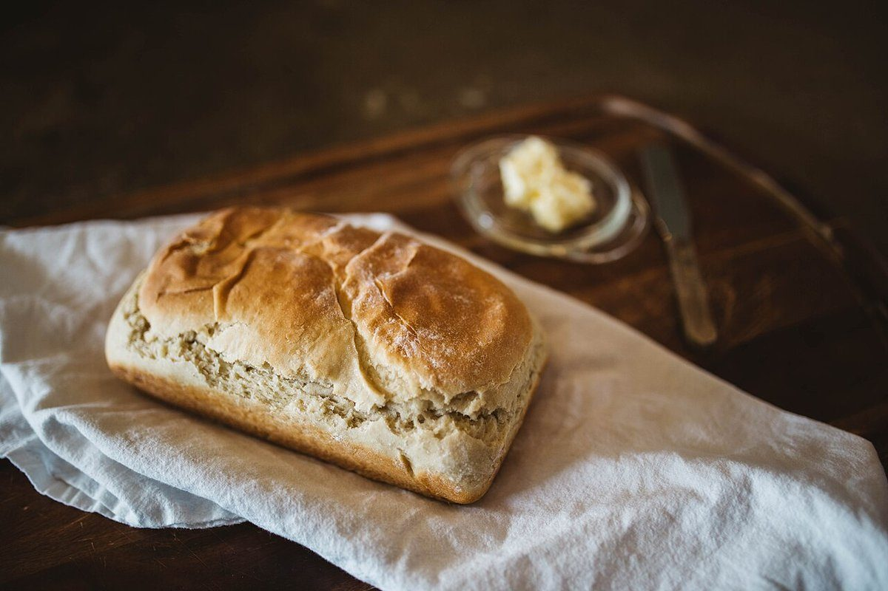

試作サンプル:これは実際の店舗ページではなく、制作側が作った見本です
MENU
メニュー
商品名・価格は準備中です(お問い合わせください)。
メニューのご案内
メニューの内容や価格は、現在準備中です。お取り扱いの商品については、電話またはInstagramでお問い合わせください。
イメージ写真
店舗の商品ではなく、雰囲気を伝えるためのフリー素材です。





試作サンプル:これは実際の店舗ページではなく、制作側が作った見本です
MENU
商品名・価格は準備中です(お問い合わせください)。
メニューの内容や価格は、現在準備中です。お取り扱いの商品については、電話またはInstagramでお問い合わせください。
店舗の商品ではなく、雰囲気を伝えるためのフリー素材です。
